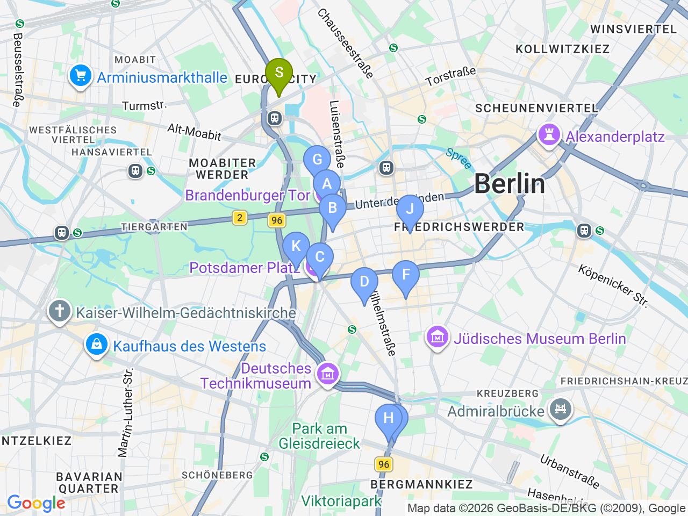

Day 18 · 2026-09-02（三）
德國・柏林/萊比錫/德勒斯登 Day 2/7
政府區巡禮：布蘭登堡門・恐怖地形圖・國會圓頂
白天走訪歷史地標與冷戰遺跡，傍晚預約場登上國會大廈圓頂俯瞰柏林
⏰國會圓頂需事先上 visite.bundestag.de 預約（免費，含中文語音導覽），9月開放登記後盡快搶9/2傍晚場，入場需攜帶登記用護照

固定時間行程DAY 18
| 時間 | 地點 | 地點 (英文) | 交通方式／班次 | 價格 | 預計停留(分鐘) | 備註 |
|---|---|---|---|---|---|---|
| 傍晚場 | 國會大廈圓頂 | 1Reichstag Building, Berlin | 步行 | 免費 | 60 | 確切時段依 visite.bundestag.de 預約結果而定；柏林9月初日落約19:45，傍晚場可順便看夕陽 |
彈性探索景點DAY 18
| 地點 | 地點 (英文) | 預計停留(分鐘) | 價格 | 備註 |
|---|---|---|---|---|
| 布蘭登堡門 | ABrandenburg Gate, Berlin | 約20分鐘 | 免費 | 柏林地標，緊鄰國會大廈 |
| 猶太人大屠殺紀念碑 | BMemorial to the Murdered Jews of Europe, Berlin | 約30分鐘 | 免費 | 2711塊石碑組成的紀念園區 |
| 波茨坦廣場 | CPotsdamer Platz, Berlin | 約20分鐘 | 免費 | 現代化商業廣場，Sony Center 所在地 |
| 午餐：Curry 36 | DCurry 36, Berlin | 約30分鐘 | 見上方三餐資訊 | U6兩站可達 |
| 恐怖地形圖 | FTopographie des Terrors, Berlin | 約45分鐘 | 免費 | 蓋世太保總部舊址常設展，內容比 Checkpoint Charlie 豐富 |
| Checkpoint Charlie | GCheckpoint Charlie, Berlin | 約15分鐘 | 免費（拍照） | 冷戰時期著名檢查哨，拍照即可 |
| 晚餐：Augustiner am Gendarmenmarkt | HAugustiner am Gendarmenmarkt, Berlin | 約90分鐘 | 見上方三餐資訊 | 根達門廣場旁 |
每日三餐
午餐
Curry 36Curry 36約 €5-8／人
📍 Mehringdamm 36, Berlin柏林咖哩香腸名店；隔壁備案 Mustafa's Gemüse Kebap（Mehringdamm 33，蔬菜口袋餅名店，常大排長龍）
晚餐
Augustiner am GendarmenmarktAugustiner am Gendarmenmarkt約 €20-30／人
📍 Charlottenstraße 55, Berlin巴伐利亞菜、豬腳，位於根達門廣場；備案 Lindenbräu（Sony Center 自釀啤酒，Bellevuestraße 3）
住宿資訊
ibis Berlin Hauptbahnhof
📍 Invalidenstraße 53, 10557 Berlin